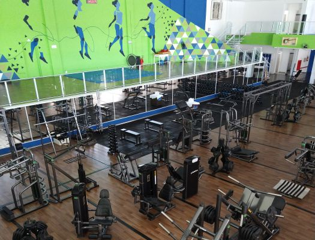
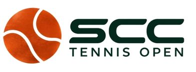
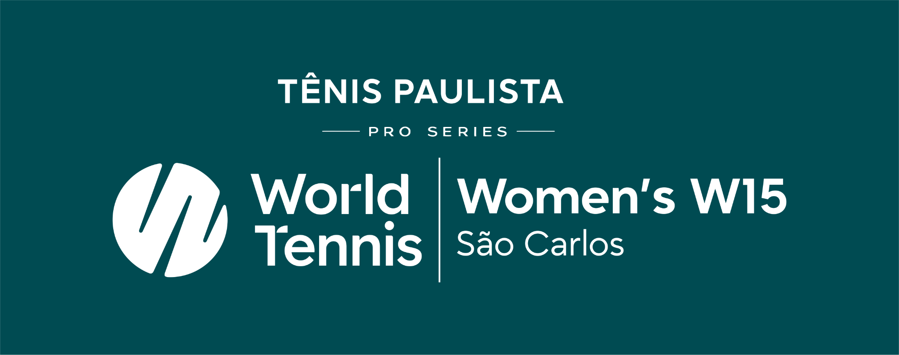
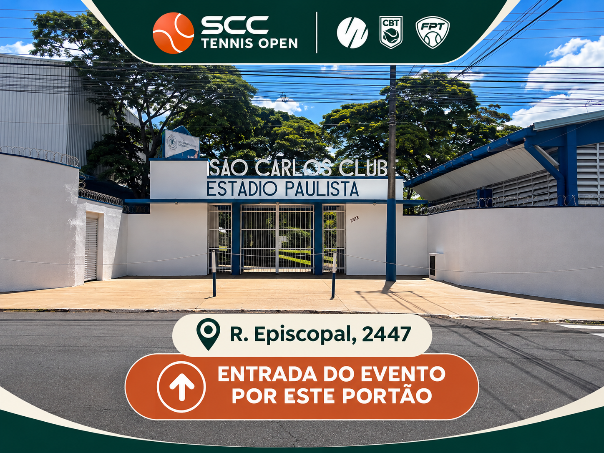
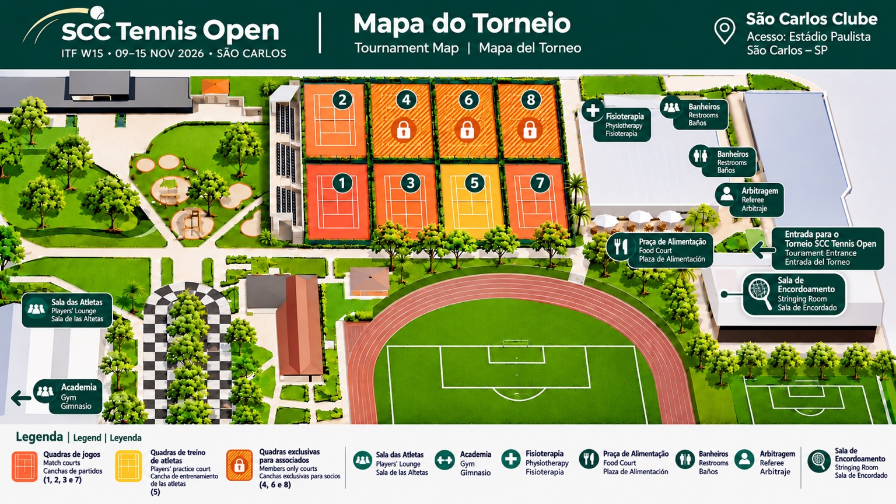

Academia
Ampla, completa e equipada. Uso compartilhado com associados do clube.
Todos os dias · 10h30–14h
Seu guia para conhecer o clube, encontrar as quadras e aproveitar a semana do torneio.
Ver mapa do torneioContatos úteis
Acesso indicado pela organização: portaria do Estádio Paulista, São Carlos Clube.

São Carlos Clube — Estádio Paulista
Utilize este link de navegação para chegar à entrada indicada para o torneio.
Abrir no Google MapsOrientações de credenciamento e acesso: a confirmar.
Confira as quadras no mapa: jogos nas quadras 1, 2, 3 e 7; treino das atletas na quadra 5; quadras 4, 6 e 8 exclusivas dos associados.

Mapa ilustrativo com posições de instalações informadas pela organização. Consulte a sinalização no local.

Ampla, completa e equipada. Uso compartilhado com associados do clube.
Todos os dias · 10h30–14hDisponível durante todo o evento. Localização identificada no mapa.
Espaço indicado no mapa do complexo.
Localização indicada no mapa, junto à quina do prédio.
Arquibancada de alvenaria com três degraus ao longo da lateral das quadras 1 e 2.
Contato e procedimento de reserva serão divulgados pela organização.
WhatsApp em breveOpções dentro do clube e restaurantes na cidade. Confirme os horários antes de sair.
Almoço: segunda a sexta, 11h30–14h30; sábados, domingos e feriados, 11h30–15h.
Operações e horários serão divulgados em breve.
Rua Jacinto Favoreto, 777 — Jardim Lutfalla, São Carlos
Informação recebida: funcionamento 24 horas, todos os dias. Confirme antes de ir.
Abrir no Google MapsHaverá transporte após as 18h. Rotas, disponibilidade, pontos de embarque e telefone de contato serão informados pela organização.
WhatsApp em breveA galeria oficial de fotografias será disponibilizada aqui assim que o link estiver pronto.
Galeria em breveContatos da organização, reserva de quadras, transporte e equipe de arbitragem serão incluídos após confirmação.
Emergências no Brasil: SAMU 192 · Polícia Militar 190
Este é um guia em atualização. Informações pendentes não devem ser interpretadas como serviços confirmados.